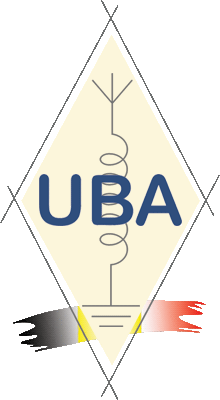

Radio Club – HF • VHF • Contest • Fieldday
Voir le Dashboard
ON4CPN, situé dans la région de Charleroi, c’est un groupe de passionnés qui aiment expérimenter, construire, activer et communiquer. Nous participons aux contests, organisons des sorties /P, testons du matériel et développons nos propres outils.
Le club évolue constamment : nouvelles antennes, nouveaux projets, dashboards en temps réel, formations ON3, HAREC et ateliers. Si la radio vous intéresse, vous êtes au bon endroit.
ON4CPN est également membre de l’Union Royale Belge des Amateurs-Émetteurs (UBA), ce qui nous permet de participer activement à la vie radioamateur en Belgique et de représenter fièrement la région de Charleroi au sein de la communauté.
ON4CPN s’est illustré à de nombreuses reprises en remportant le Fieldday UBA VHF/UHF, preuve de notre maîtrise technique et de la force de notre équipe. Aujourd’hui, nous tournons notre expertise vers la HF. Avec la même rigueur, la même passion et tout notre savoir‑faire, nous mettons le cap sur le Fieldday HF pour y performer au plus haut niveau.
Notre expérience collective se reflète aussi à titre individuel : plusieurs membres du club s’illustrent régulièrement dans divers concours, démontrant que l’esprit ON4CPN rayonne bien au‑delà de nos activités communes.
Rejoignez‑nous et découvrez l’univers radio sous un nouvel angle.
Suivez-nous sur Facebook et QRZ.COM